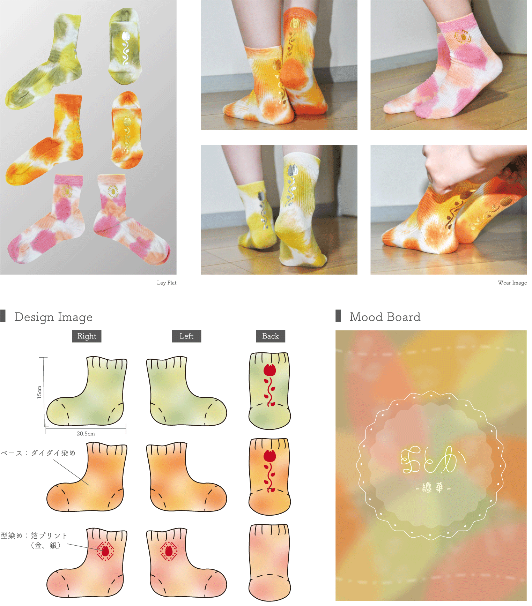
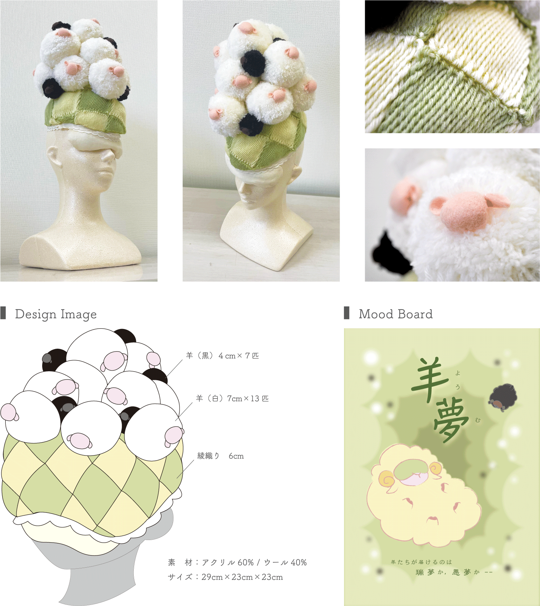

Fashion

Theme
ろうけつ染めとは、溶かした蝋を筆を介して生地に塗り、塗った箇所のみ染料を染み込まなくさせ、他を染色することで絵を描くという技法である。
蝋の持つ「染料を弾く性質」を生かして幾重にも塗り重ね防染し、その折に染色を施していく。蝋を薄く塗るほど染料は浸透するため、塗る「蝋の厚みのまばらさ」が作品の表現に繋がる。
これは、そんなろうけつ染めを用いて、模様をテーマに100cmの白い生地を好きなデザインに染め上げる課題だ。

Concept
「和柄」をテーマに「鳥」を描いた。めでたさのある９つの柄を組み合わせて、少しアレンジを加え「手描き感の残る和柄」をコンセプトに制作した。
機械的でなく柔らかい印象となるよう、蝋の置き方は特に意識して強弱をつけた。また枠外に菊をはみ出させたり、模様や配色を複雑化するなどして、迫力と見応えを引き出した。
綿
36h
2022/11-12
Theme
ろうけつ染めとは、溶かした蝋を筆を介して生地に塗り、塗った箇所のみ染料を染み込まなくさせ、他を染色することで絵を描くという技法である。
蝋の持つ「染料を弾く性質」を生かして幾重にも塗り重ね防染し、その折に染色を施していく。蝋を薄く塗るほど染料は浸透するため、塗る「蝋の厚みのまばらさ」が作品の表現に繋がる。
これは、そんなろうけつ染めを用いて、四字熟語をテーマに4枚の30cmの白いハンカチを好きなデザインに染め上げる課題だ。
Concept
「鳥語花香」をテーマに「メジロ」と「梅」を描き、4枚が縦に続く1枚絵となるようデザインした。ろうけつ染めに繊細な描写は不向きなため、メジロは大きく梅は抽象化し、メジロの鳴き声をイメージした輪模様を描いた。
染色は上下で「午前の青空」と「午後の夕焼け」をイメージして行った。この課題を通して初めてろうけつ染めに触れ、この技法ならではの淡さやグラデ―ジョン、ひび割れ等を学びつつ楽んで取り組めた。
綿
20h
2022/10
Theme
染めを学ぶ最初の授業課題である。綿100%の素材を自身の調合した色に染め上げた後、箔プリントを施してレッグウェアを制作する。
Concept
タイトルは「纏華 -草花に溶け込むナチュラルソックス-」、ターゲットは花屋に勤務する20代前半の女性である。
彼女は自然を愛し、自宅でも沢山の草花に囲まれながら、花をモチーフに編み物を嗜む暮らしを送るという想定だ。
彼女の華やかな部屋とは対照的に、職場でのエプロンを着た制服姿はとても簡素で寂しさを感じさせるため、そこにさりげないアクセントを与える靴下を提案する。
鮮やかな植物で満ちた空間に溶け込む色合いでありつつ、ふと目に止まる可愛らしさを形にした。この靴下を履くことで足先まで華に包まれ、微笑む可憐な彼女の姿を想像してデザインしている。
調合した6色でそれぞれダイダイ染めし、金と銀の箔を用いて型染めを施した。箔は、踵からチューリップが生える様子と、エプロンの裾からワンポイントのチューリップが覗く様子の、2通りの魅せ方でプリントした。
綿
24h
2022/5-7
Theme
裁断したポリエステル素材の生地に、転写プリントを多用して服とバッグをデザインする課題。裁断する型は四角または六角と限定されており「平置時と着用時での印象の違い」を知ることを目的としている。

Concept
タイトルは「ハーベスト -実りと収穫を祝うワンピース・風呂敷バッグ-」、ターゲットは農家で暮らす野菜好きな13歳の女の子である。
彼女の愛する野菜の中から「かぼちゃ」をテーマに、ワンピース・ベルト・風呂敷バッグの3点を制作した。野菜フェスタ等、町おこしのイベント事に彼女が身につけ、家族で育てた野菜を宣伝することを想定している。
これらを纏う彼女が目印となるよう、全身でかぼちゃを表現できるデザインで、存在感を大きく表すことを意識して制作した。
初めに色を調合し、白い生地を橙色と深緑色に染め上げた後、裁断→転写プリントでかぼちゃ模様の施し→箔を使用して型染め→縫製の順で形にしている。
ポリエステル
20h
2022/10-11
Theme
平織り・綾織り・繻子織りを学び、それら「織り」を取り入れた「ヘッドピース」を制作する課題だ。既製品の使用は避け、ボリューム感のある作品を目指す。
Concept
タイトルは「羊夢 -羊が安眠?を届けるナイトキャップ-」、ターゲットは睡眠を何より愛する15歳の女の子である。
学校生活でのストレスからか、悪夢を見ることが増えた彼女は、SNSで快眠グッズを漁る日々を過ごす。近頃は胡散臭いサイトも覗いては、安眠欲しさに手を出してしまうことも少なくないという想定だ。
そんな彼女へ向けて、安眠できるかもしれないナイトキャップを制作した。胡散臭さを全面に「ストレスや不安を抱え、悪夢を見てしまいそうな夜。眠る前に被って瞑想すると、羊たちが安眠を届けてくれるかも⁉︎」がコンセプトだ。
ナイトキャップの上に座る羊たちが安眠(?)を届けるとして白羊は瑞夢を、黒羊は悪夢を表している。瑞夢の中に時折り見る悪夢はスパイスであるとし、小さい黒羊も少量混ぜた。
羊は、毛糸からぽんぽんとして体を作り、フェルトで顔と耳を制作した。ナイトキャップ部分は全て綾織りで、アイマスクは中に綿を詰めて縫製している。
アクリル・ウール
33h
2023/1